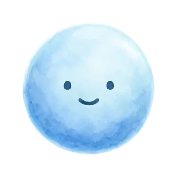
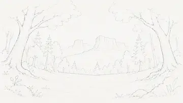

Nature Seed Narysuj ścieżkę. Połącz je.
Darmowa łamigłówka fizyczna z rysowaniem, w którą zagrasz w przeglądarce. Narysuj linię z ograniczonego zapasu atramentu, a zmieni się w rampę, most lub punkt łapiący, który doprowadzi Water Drop do Seed. Każdy rozwiązany poziom przywraca scenę akwarelowego lasu.
Premiera 18 września 2026 r.: 100 poziomów, gwiazdki za efektywność linii i zapis postępów. Gra jest darmowa na itch.io, Game Jolt i indiexpo; wersja na iOS i Android to cel, ale nie ma jej jeszcze w sklepach z aplikacjami.
Rysujrysuj ograniczonym atramentem
Połączeniedoprowadź Water Drop do Seed
Rozkwitprzywróć las
W bieżącej wersji
To, co narysujesz, staje się częścią poziomu.
Każde pociągnięcie, które zatwierdzisz, staje się twardym obiektem z prawdziwymi kolizjami, a Water Drop i Seed na nie reagują. Atrament i liczba linii są ograniczone, więc kształt linii ma znaczenie.
Stan wydania Wydany 18 września 2026 r

Przegląd gry
Relaksująca łamigłówka z rysowaniem o tym, jak połączyć dwie małe postacie.
Pomysł
Narysuj ścieżkę, połącz Water Drop i Seed i patrz, jak spokojny szkic wraca do życia.
Wersja startowa
100 grywalnych poziomów z rysowaniem dotykiem, gwiazdkami za efektywność linii i postępami zapisywanymi między sesjami.
Odbiorcy
Gracze, którzy lubią spokojne łamigłówki, lekką fizykę, motywy przyrodnicze i mobilne sesje bez stresu.
Status
Premiera 18 września 2026 r.; za darmo w przeglądarce. Celem jest wersja mobilna, której nie ma jeszcze w sklepach z aplikacjami.
Funkcje
Co robisz w Nature Seed.
Fizyczne ścieżki rozwiązywane rysowaniem
Każda łamigłówka zaczyna się od terenu, Seed i Water Drop. Pociągnięcie gracza staje się rampą, mostem albo punktem łapiącym, który ich łączy.
Czytelna reakcja fizyki
Water Drop i Seed poruszają się w sposób, który da się śledzić, więc nieudana próba pokazuje, co zmienić.
Nagrody za odnowienie lasu
Ukończ poziom, a naszkicowana scena wypełni się kolorem i rosnącymi drzewami.
Krótkie poziomy, rysowanie dotykiem
Poziomy są krótkie, a rysujesz dotykiem, co dobrze pasuje do szybkich sesji na telefonie.
Pętla rozgrywki
Jak grać w Nature Seed
- Krok 01Przeczytaj szkic
Wypatruj zboczy, luk i przeszkód oraz najbezpieczniejszego sposobu na połączenie obu postaci.
- Krok 02Narysuj linię
Narysuj swoją linię. Pociągnięcie staje się rampą, prowadnicą albo punktem łapiącym dla postaci.
- Krok 03Zatwierdź i obserwuj
Zatwierdź linię i patrz, jak reagują postacie. Zobaczysz, co zadziałało, a co nie.
- Krok 04Rozkwitaj lub udoskonalaj
Jeśli Water Drop dotrze do Seed, las wraca. Jeśli się miną, narysuj od nowa, wykorzystując świeżo zdobytą wiedzę.
Historia / świat
Naszkicowany las czeka na wodę.
Nature Seed zaczęło się jako fizyczna łamigłówka z rysowaniem o odbudowie czegoś kruchego, a nie o zderzaniu przedmiotów.
Obsada to Seed, Water Drop i las, który w trakcie gry wraca ze szkicu do koloru. Każda łamigłówka to małe zadanie: przyjrzyj się terenowi, narysuj ścieżkę i pomóż wodzie dotrzeć do czegoś, co może rosnąć.
- Kierunek projektowania
- Spokojna fizyka i widoczna odbudowa
- Postacie
- Water Drop i Seed
- Interakcja
- Rysowanie dotykiem
- Nagroda za mistrzostwo
- Rozwiązanie jedną linią daje trzy gwiazdki
W skrócie
Dziś za darmo w przeglądarce, a docelowo na urządzenia mobilne.
Masz ograniczony atrament i ograniczoną liczbę linii. Wykorzystaj je, by doprowadzić Water Drop do Seed, a potem zagraj poziom jeszcze raz i zredukuj rozwiązanie do jednej linii, by dostać trzy gwiazdki.
- Gatunek
- Fizyczna łamigłówka z rysowaniem
- Platforma docelowa
- iOS/Android
- Format sesji
- Krótkie, spokojne poziomy
Pobierz materiały
Nature Seed - materiały dla prasy i twórców
Podglądy WebP do publikacji prasowych, oceny wydawców i odnośników na stronach sklepów. Pliki źródłowe w pełnej rozdzielczości są dostępne na prośbę.
Marka i postacie


Water DropNiebieska postać, która musi dotrzeć do Seed. Postać SeedZielona postać, do której Water Drop próbuje dotrzeć.
Postać SeedZielona postać, do której Water Drop próbuje dotrzeć.
 Wzrost drzewDrzewo, które rośnie po rozwiązaniu.
Wzrost drzewDrzewo, które rośnie po rozwiązaniu.
 Menu leśneTło menu głównego.
Menu leśneTło menu głównego.
 Tło rozgrywkiTło poziomu z pustym polem gry.
Tło rozgrywkiTło poziomu z pustym polem gry.
Poziomy szkicu rozwiązywane rysowaniem
 Szkic, poziom 01Szkic przed rozwiązaniem.
Szkic, poziom 01Szkic przed rozwiązaniem.
 Szkic, poziom 02Szkic przed rozwiązaniem.
Szkic, poziom 02Szkic przed rozwiązaniem.
 Szkic, poziom 03Szkic przed rozwiązaniem.
Szkic, poziom 03Szkic przed rozwiązaniem.
 Szkic, poziom 04Szkic przed rozwiązaniem.
Szkic, poziom 04Szkic przed rozwiązaniem.
 Szkic, poziom 05Szkic przed rozwiązaniem.
Szkic, poziom 05Szkic przed rozwiązaniem.
 Szkic, poziom 06Szkic przed rozwiązaniem.
Szkic, poziom 06Szkic przed rozwiązaniem.
 Szkic, poziom 07Szkic przed rozwiązaniem.
Szkic, poziom 07Szkic przed rozwiązaniem.


Szkic, poziom 08Szkic przed rozwiązaniem. Szkic, poziom 09Szkic przed rozwiązaniem.
Szkic, poziom 09Szkic przed rozwiązaniem.
 Szkic, poziom 10Szkic przed rozwiązaniem.
Szkic, poziom 10Szkic przed rozwiązaniem.
Odbudowane sceny z łamigłówek
 Odbudowany poziom 01Odtworzona po rozwiązaniu.
Odbudowany poziom 01Odtworzona po rozwiązaniu.
 Odbudowany poziom 02Odtworzona po rozwiązaniu.
Odbudowany poziom 02Odtworzona po rozwiązaniu.
 Odbudowany poziom 03Odtworzona po rozwiązaniu.
Odbudowany poziom 03Odtworzona po rozwiązaniu.
 Odbudowany poziom 04Odtworzona po rozwiązaniu.
Odbudowany poziom 04Odtworzona po rozwiązaniu.
 Odbudowany poziom 05Odtworzona po rozwiązaniu.
Odbudowany poziom 05Odtworzona po rozwiązaniu.
 Odbudowany poziom 06Odtworzona po rozwiązaniu.
Odbudowany poziom 06Odtworzona po rozwiązaniu.
 Odbudowany poziom 07Odtworzona po rozwiązaniu.
Odbudowany poziom 07Odtworzona po rozwiązaniu.
 Odbudowany poziom 08Odtworzona po rozwiązaniu.
Odbudowany poziom 08Odtworzona po rozwiązaniu.
 Odbudowany poziom 09Odtworzona po rozwiązaniu.
Odbudowany poziom 09Odtworzona po rozwiązaniu.
 Odbudowany poziom 10Odtworzona po rozwiązaniu.
Odbudowany poziom 10Odtworzona po rozwiązaniu.
Oś czasu rozwoju
Oś czasu rozwoju Nature Seed
- Lato 2025Oryginalna koncepcja
Nature Seed zaczęło się od pomysłu na spokojną mobilną łamigłówkę o więzi i odbudowie natury.
- październik 2025Tożsamość Seed i Water Drop
Skończyliśmy dokument projektowy i zdecydowaliśmy, że głównymi bohaterami będą Seed i Water Drop.
- grudzień 2025Rozpoczyna się rozwój
Pierwsze poziomy zaplanowaliśmy na papierze, potem zaczęliśmy budować i główne systemy stały się grywalne.
- luty 2026Duże opracowanie poziomów roboczych
Duże, zgrubne przejście przez poziomy dało nam bazę pod późniejsze szlifowanie i balansowanie.
- marzec-kwiecień 2026Mechanika i przegląd poziomów
Przejrzeliśmy dodatkowe mechaniki i szkicowe poziomy, a potem uprościliśmy je lub przerobiliśmy, by gra pozostała spokojna.
- lipiec 2026Dopracowanie pionowego prototypu
Lipcowa wersja złożyła rysowanie z ograniczonym atramentem, gwiazdki za efektywność, zapis postępów i stabilne generowanie linii w jedną grywalną pętlę.
- 18 września 2026 rPremiera Nature Seed
Gra zadebiutowała jako Nature Seed ze 100 poziomami, gwiazdkami za efektywność linii, zapisem postępów i akwarelowymi scenami odbudowy.
Nature Seed FAQ
Najczęstsze pytania o Nature Seed
Czy Nature Seed jest darmowe?
Tak. Możesz w nie zagrać za darmo w przeglądarce na itch.io, Game Jolt i indiexpo.
Czy Nature Seed już wyszło?
Tak. Premiera odbyła się 18 września 2026 r., ze 100 poziomami. Wersja na iOS i Android to platforma docelowa, której nie ma jeszcze w sklepach z aplikacjami.
Jaką grą jest Nature Seed?
Relaksująca łamigłówka fizyczna z rysowaniem. Narysowane przez ciebie linie stają się twardymi obiektami, które pomagają Water Drop i Seed się spotkać.
Jak grać w Nature Seed?
Przeczytaj teren, narysuj trasę ograniczonym atramentem i patrz, jak reagują obie postacie. Jeśli się miną, narysuj od nowa. Im mniej linii, tym więcej gwiazdek, a jedna linia daje trzy.
Kto robi Nature Seed?
WillowinWorlds, niezależne studio tworzące mobilne łamigłówki i gry zręcznościowe.
Czy mogę używać materiałów prasowych Nature Seed?
Tak, do publikacji prasowych, oceny wydawców i odnośników w sklepach. Pliki źródłowe pozostają prywatne, chyba że o nie poprosisz.
Nature Seed Devlog
Co się zmieniło i kiedy
- Premiera Nature Seed
Nature Seed zadebiutowało pod finalnym tytułem jako darmowa gra przeglądarkowa na itch.io, Game Jolt i indiexpo, ze 100 poziomami, gwiazdkami za efektywność linii i zapisem postępów.
- Dopracowanie odbudowy i stabilności poziomu 2
Poziom 2 korzysta teraz z pary teł produkcyjnych oraz ma bardziej niezawodną konfigurację poziomu, sprawdzanie kolizji i informację zwrotną o ukończeniu.
- lipiec 2026Grywalna wersja
Lipcowa wersja połączyła rysowanie linii z ograniczonym atramentem, gwiazdki za efektywność, zapis postępów i efekty odbudowy.
- kwiecień 2026Przeróbka poziomów
Po wewnętrznym przeglądzie przerobiliśmy kilka szkicowych poziomów, żeby zmniejszyć ich złożoność i ułatwić czytanie ich na telefonie.
- marzec 2026Przegląd mechaniki
Przetestowaliśmy dodatkowe mechaniki i usunęliśmy te, przez które poziomy sprawiały wrażenie zatłoczonych.
- luty 2026Duże opracowanie poziomów roboczych
Duże, zgrubne przejście przez poziomy stało się bazą pod późniejsze szlifowanie i balansowanie.
- grudzień 2025Rozpoczyna się rozwój
Główne systemy przeszły z dokumentu projektowego do grywalnej postaci.
- Lato 2025Oryginalna koncepcja
Pierwsza wersja Nature Seed była pomysłem na spokojną łamigłówkę o więzi i odbudowie natury.